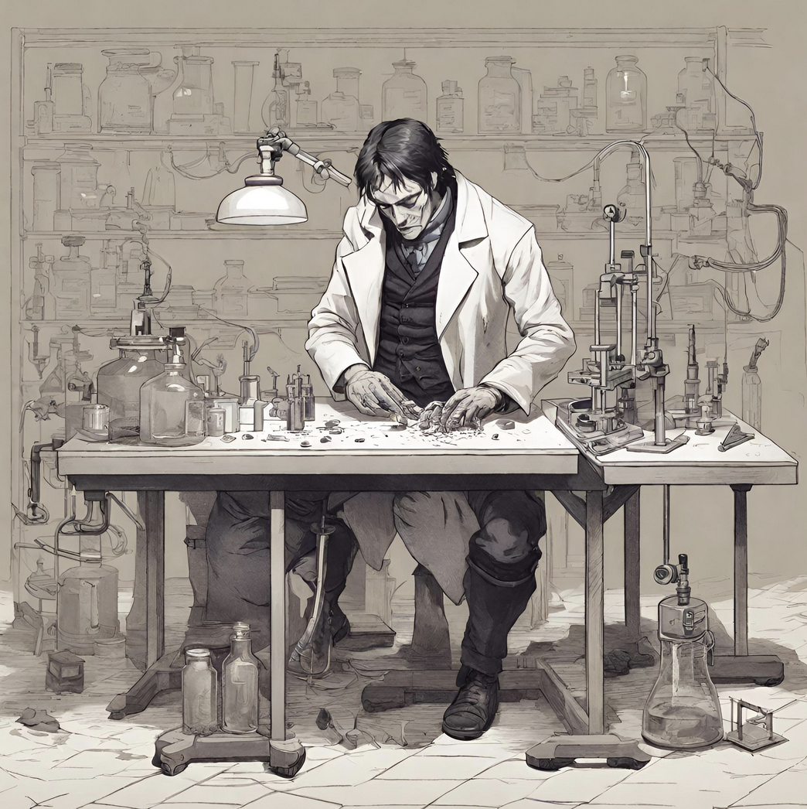
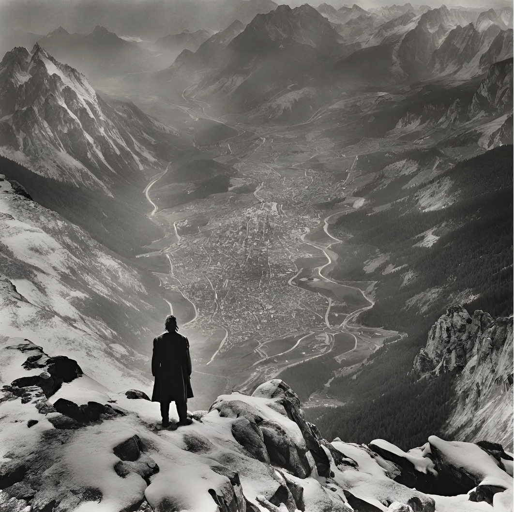
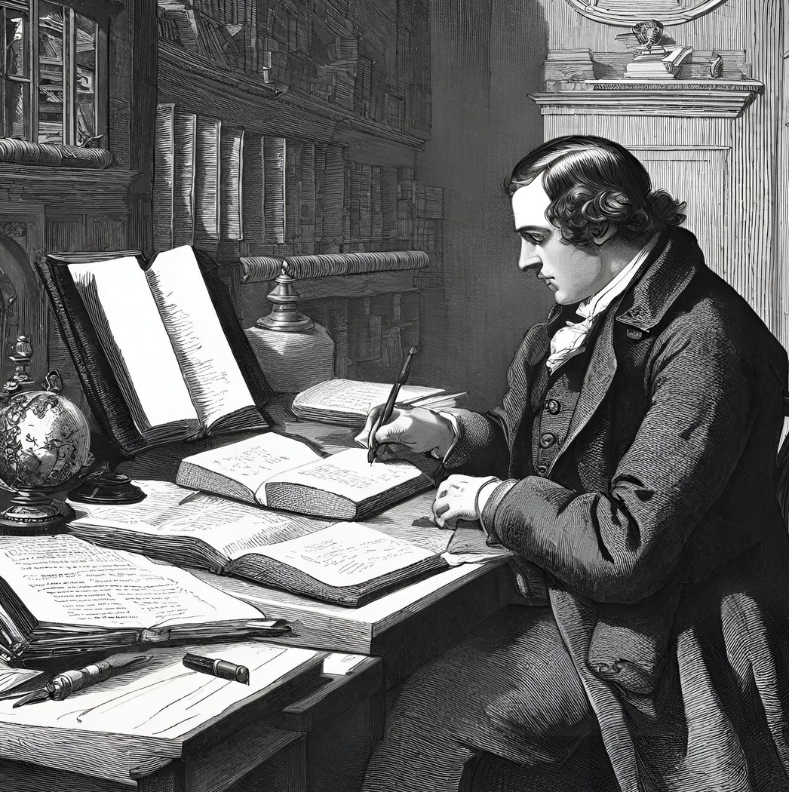

Letters to the Editor
To the Editor:
I would like to warn others why they should never follow in my footsteps. To work with life is to play with life, and one should never take that lightly. I made the mistake to spite life by creating a superhuman, of increased, stature, strength, and intelligence. I did this because I wanted to be known throughout the world. I wanted my name to be ever living, but instead I became famous due to the tragedy of my life, with everyone in my family dying from my own Machination. I killed, a servant, a brother, a friend, a wife, and a father. I saw what the lure of glory did to me and I would like to warn others, to not walk that path, at the expense of other lives. I almost allowed this monster to become the end of humanity because I almost created a partner for the dæmon I created. Do not let glory come above all.
-Victor Frankenstein,
To the Editor:
I have no name, but I do have a voice, but more important, in this case, the ability to write. I have been seen as a monster, but that is wrong. I was first shunned and attacked by humanity, and now all I want is companionship. The murders were a way to get to my creator, a creator who fled from me when he first saw me. How would you have liked to have been with a fully formed brain, and having your mother see you then run away from you, hoping to never see you again. You would feel as if there were something wrong with you. Then how would you feel that if anyone saw you, they would scream at you, then proceed to attack you. This is why I want to go to a secluded location. But first I wanted a companion, so, I did the only thing I could, forcing my creator. At first, he did as I asked, but then he murdered my companion as well as my future, so I did the same to him, killing his companion and future. When I put it like that does it seem so bad what I have done
-He who has no name
To the Editor
I do not understand all these things about my friend Victor Frankenstein. I have been told that he has created a monster of an eight-foot stature, and superhuman strength. I was told that this monster is what killed William and I. But the Victor I know would never have done that, would he? I know he spoke of things like this, but at the time I thought he was delirious due to extreme fatigue and extreme guilt. I thought this monster was of his mind’s creation, not a physical that he created with his own two hands. Would the Victor I knew have created this thing that strangled me and killed me, but my last moments are too fuzzy to remember. For all that is good in the world, I hope this monster was only a creation of his mind.
-Ghost of Henry Clerval